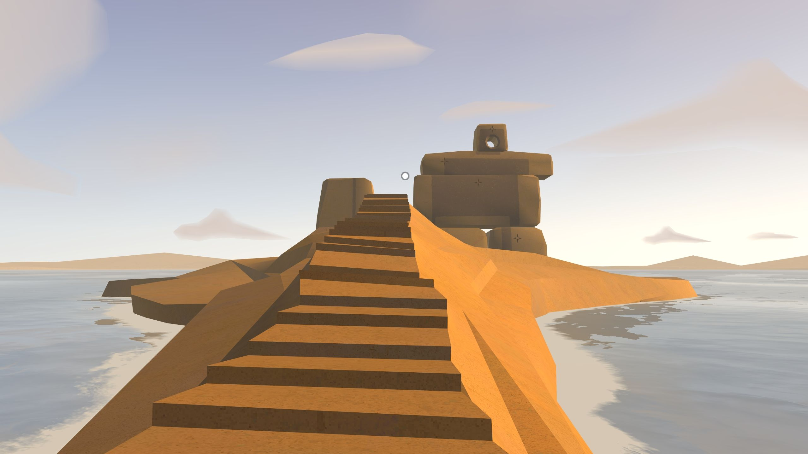

GearVR | Usability Testing

Background
Hoy the joy! I got a GearVR set for my birthday a couple of years ago, being fascinated with VR for some time and eager to learn more about it. Though, it was quite quickly when I started to find the interaction with the controller rather frustrating. Either the constant need to recalibrate it, re-sync the Bluetooth connection or while being immersed in the VR environment finding the navigation with this one controller somewhat un-intuitive. Which eventually discouraged me from using it altogether.
A couple of years have passed, and the VR set found a dusty corner in my flat. Then, all of a sudden COVID-19 was upon us and I got some time on my hands. So, I went ahead and experimented with usability testing, crafted and conducted independently as an exercise with my quarantining roommates at our little London chamber.
Being particularly interested in other's opinion regarding the controller issues I have found in the past, I decided to conduct a comparative usability study, questioning the impact of the controller on the Gear VR experience.
Research Plan
To unfold the GearVR experience, focusing on the impact of the controller, I planed a couple of tasks which aimed to capture the basic experience of a head-mountain display VR system which will then be tested both with and without the controller in order to test the GearVR interface experience.
Aiming to combine both behavioural and attitudinal aspects in this research I decided to combine both observations and interview in this moderated usability testing.
Attitudinal
Covering human-machine interaction in my research projects in the past with particular interest in bodily experiences I aimed to explore participants
- body posture
- movement
- navigation issues
Behavioural
Conducting semi-structured short interviews. Before and after each task. Before - mainly to hear about their previous experience in VR and expectations. After - to hear about their experience, preferences, struggles etc
Participants
I gathered a couple of my roommates to be my participants. And together with my partner, I gathered 4 participants. All male, aged between 25-32.
To avoid bias in the findings while having a small sample size I aimed for 2 participants to start with the controller and 2 to start without.
The usability task
Each participant was asked to complete 4 whole chapters of a VR game called Land's End (for about an hour) two chapters with controller and two chapters without the controller; navigating only with the controller or alternatively the touch-pad provided on the right-hand side of the headset and the gaze capture navigation mechanism.
Off we go!
Experiment
The whole experiment was spread throughout a week and participants were taking the tasks individually without being aware of the research question or the other participant's experience.
I helped the participants to accommodate the VR set and headphones asking them to be completely silent while completing the tasks (unless encountering issues).
As the facilitator, I guided them through the tasks while collecting my data on the side letting them finish without interruptions.
Analysis
Using sticky notes to summarise finding. To uncover patterns in the experience I divided my findings to 3 overall themes:
- body
- preference
- methodological insights
Results
| Without controller | With controller |
|---|---|
| more tiring (hand and overall) | less tiring |
| reported awkward feelings, including uncomfortable sensation not knowing what to do with their hands | more intuitive interaction, particularly with menu junctions points. |
| better immersion |
Users reported that the absence of the controller is causing a lack of engagement with their hands which they found to be rather disturbing and uncomfortable. Resulting in a sense of awareness to their bodies which they claimed to be diminishing the sense of immersive illusion of forgetting your body VR can offer.
Limitations
- only male participants
- small sample size
- the particular game I based this test upon, Land's End, has a very fluent gaze-based mechanism for navigation. I would argue that other tasks in different environments would suggest other needs and other interactions altogether.
- not having them getting me input during the tasks.
I decided to avoid the 'thinking out loud' techniques which is known to be valuable in usability testing, due to the nature of VR. Having an immersive experience in VR, following academical research, is rather impacted by the isolation elements this system holds. Communicating during the experience is highly regarded as a disturbing effect to such illusions and can shatter the illusion and overall interaction with the system.
Lesson Learned
The power of comparison
- participants articulation was improved after the two sessions (with and without the controller)
- contextual immediate comparison
- scientific experimental metrics
It was really interesting to see how impact-full the comparison part was in the way the participants articulated their experiences. Coming from anthropology where a comparison is made in an analytical macro position rather than in contextual experimental form. Which I found powerful and insightful.
The power of research
Undertaking this usability testing exercises showed me once again the power of research vs assumptions. The findings completely shattered my expectation. As I don't tend to enjoy navigating with this controller I assumed my friends will find it just as an obstacle as I did. And yet, they all preferred to use the controller during this game after all.